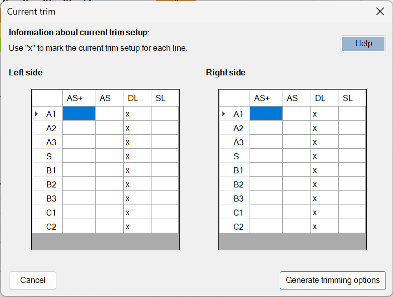
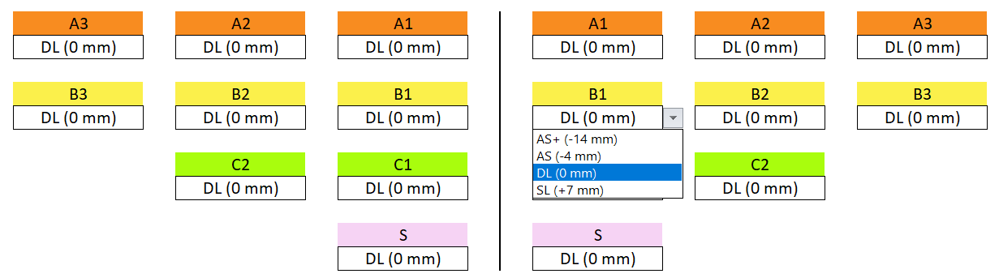

Manual for Checkers
This guide outlines the tools and functionalities available to checkers using WingChecker. It also provides instructions for basic usage.
Available Checking Tools
WingChecker offers several tools designed to assist in the evaluation process. All tools are accessible via the ribbon in Excel.
Switch View
The Switch View button allows you to zoom in or out while conducting measurements. This function is limited to the Measuring sheet and helps improve visibility during the checking process.
Print Report
By selecting Print Report, a PDF version of the Evaluation sheet is generated, which you can save locally.
An example report can be downloaded here.
Print report button disabled?
The Print Report button will remain disabled until the Evaluation button has been clicked.
About
Clicking the About button provides information regarding the WingChecker Add-in, including details about the development team, version number, and other relevant technical information.
Evaluation Process
This section guides you through the process of evaluating a wing using WingChecker.
Measuring and Evaluating the Wing
Once you have input all measured line lengths in the Measuring sheet, click the Evaluation button on the ribbon to begin the evaluation process.
Missing line lengths
WingChecker will verify that all lines have been measured. If any measurements are missing, a warning will be displayed, and the evaluation will not proceed.
The Evaluation Sheet
Upon successful evaluation, the Evaluation sheet will display the results. It should resemble the following example:

Formatting Rules
To enhance clarity, WingChecker employs conditional formatting in the Evaluation sheet:
- CYAN: Indicates where user input is required. These cells are editable.
- RED: Signals that a tolerance limit has been exceeded.
- GREEN: Indicates that the line is within the allowed tolerance.
- Line Level Colors: Each line is color-coded according to its level. A legend explaining these levels is located on the far right of the sheet. Stabilo and brake lines are consistently marked with S and F, respectively.
- Double Underlined Numbers: These signify that the deviation between the same lines on opposite sides of the wing exceeds the permissible tolerance.
Reminder
Ensure all cyan-colored cells are filled in correctly.
Trimming Setup
To configure trimming, click the Trim Settings button on the ribbon.
Generating Trimming Options
Clicking Trim Settings opens a form where you can select the initial trim setup (i.e., prior to the completed check) for each main line on both sides of the wing.  Each row in the table corresponds to a main line, and each column represents an available trimming option.
{kind=link}
Trimming options
- AS+: cow hitch + single loop.
- AS: cow hitch.
- DL (default for new wings): double loop.
- SL: single loop
Warning
Each main line should have only one "x" in its corresponding row, indicating the selected trimming option. An example of valid input is shown in the form image above.
Once the form is completed, click Generate Trimming Options to apply the selected trim settings to the Evaluation sheet. The result should resemble the following example:

Using the Trimmers
To apply trimmers, select the desired trim option from the dropdown menu.

{kind=link}
After selection, WingChecker will automatically adjust all lines attached to the selected main line according to the chosen trim option.
Finalization
Before closing the workbook, ensure the following:
- (Optional) Print the evaluation report.
- Save the workbook.